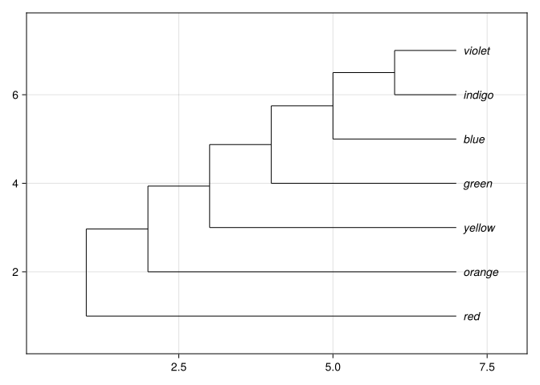
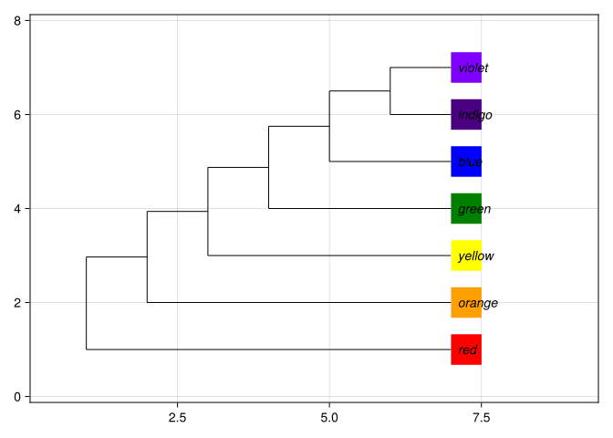
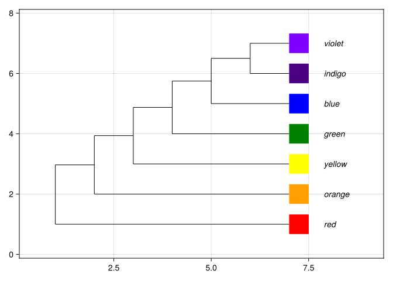

phylogeny_newick = "(red,(orange,(yellow,(green,(blue,(indigo,violet))))));""(red,(orange,(yellow,(green,(blue,(indigo,violet))))));"Jeet Sukumaran
This tutorial develops 1 small analysis in the same order that we would work through it at the Julia REPL:
Newick string -> phylogeny object -> tree plot -> tip images -> label spacing -> illustrated treeWe will first confirm the tree topology and tip labels. We will then add 1 supplied image to each tip. No image discovery is required.
GLMakie and PhyloMakie.jl need to be installed in the active environment. If this has not already been done, run:
Load the packages with:
The tip labels are the 7 colors red, orange, yellow, green, blue, indigo, and violet. The nested parentheses describe a fully bifurcating ladderized tree.
"(red,(orange,(yellow,(green,(blue,(indigo,violet))))));"Read the parentheses from the inside out. indigo and violet are sister tips. Their clade is successively joined by blue, green, yellow, orange, and red.
LineageNetwork(13 nodes, 12 edges, 7 tips, 0 hybrid nodes, rooted)The variable phylogeny_newick contains text. The variable phylogeny contains the phylogeny object that PhyloMakie can plot.

This first plot is a checkpoint. Before adding another layer, confirm that all 7 labels are present and that indigo and violet are sisters.
Each source page records the image provenance and reuse terms.
| Tip | Wikimedia Commons source | Creator | Reuse status |
|---|---|---|---|
red |
Red-ff0000.png | Vcvfou698069 | Public domain |
orange |
Solid orange.png | Rocket000 | Public domain |
yellow |
Solid yellow.png | Rocket000 | Public domain |
green |
Solid green.png | Rocket000 | Public domain |
blue |
Solid blue.png | Rocket000 | Public domain |
indigo |
Solid indigo.svg | Fringio | CC0 1.0 |
violet |
Solid violet.svg | Sangjinhwa | Public domain |
The dictionary below gives us direct PNG URLs that PhyloMakie can download and decode. The indigo and violet values request PNG previews of SVG source files.
image_urls = Dict(
"red" => "https://upload.wikimedia.org/wikipedia/commons/7/7f/Red-ff0000.png",
"orange" => "https://upload.wikimedia.org/wikipedia/commons/a/a8/Solid_orange.png",
"yellow" => "https://upload.wikimedia.org/wikipedia/commons/6/6d/Solid_yellow.png",
"green" => "https://upload.wikimedia.org/wikipedia/commons/c/c7/Solid_green.png",
"blue" => "https://upload.wikimedia.org/wikipedia/commons/e/e5/Solid_blue.png",
"indigo" => "https://thumb.wikimedia.org/wikipedia/commons/thumb/5/5f/Solid_indigo.svg/960px-Solid_indigo.svg.png",
"violet" => "https://upload.wikimedia.org/wikipedia/commons/thumb/2/24/Solid_violet.svg/960px-Solid_violet.svg.png",
)Dict{String, String} with 7 entries:
"indigo" => "https://thumb.wikimedia.org/wikipedia/commons/thumb/5/5f/Solid_i…
"yellow" => "https://upload.wikimedia.org/wikipedia/commons/6/6d/Solid_yellow…
"orange" => "https://upload.wikimedia.org/wikipedia/commons/a/a8/Solid_orange…
"blue" => "https://upload.wikimedia.org/wikipedia/commons/e/e5/Solid_blue.p…
"violet" => "https://upload.wikimedia.org/wikipedia/commons/thumb/2/24/Solid_…
"green" => "https://upload.wikimedia.org/wikipedia/commons/c/c7/Solid_green.…
"red" => "https://upload.wikimedia.org/wikipedia/commons/7/7f/Red-ff0000.p…Every dictionary key exactly matches 1 tip label in phylogeny_newick. That exact match tells PhyloMakie which image belongs to which tip.
PhyloMakie downloads these images when the illustrated tree is first plotted. The plotting step therefore requires an internet connection.
ImageAnnotation controls where and how large an image appears. Tips are 1 data unit apart vertically, so an image height below 1 leaves space between adjacent images.
We now have 3 objects with separate jobs:
| Object | Role |
|---|---|
phylogeny |
Stores the topology parsed from the Newick string. |
image_urls |
Maps each exact tip label to a supplied image URL. |
tip_images |
Adds placement and sizing instructions for each image. |
First, keep the small tipoffset from the original tree plot. This lets us see why image placement and text placement need to be adjusted separately.

Two arguments are doing different jobs:
position = :right places the left edge of each image at its tip node, so the image extends to the right of the tree.tipoffset = 0.12 places each tip label only 0.12 x-axis data units to the right of its tip node.The image and the label therefore occupy some of the same space. Changing position would move the image. To move only the text, change tipoffset.
Increase tipoffset while leaving tip_images unchanged. The tree topology, image size, and image placement all remain the same.

The nodeimages argument adds the image dictionary to the live tree plot. The larger tipoffset moves the tip-label text past the images, and the explicit axis limits reserve space for both the images and the labels.
First change the final plot’s tipoffset from 0.9 to 1.2 and rerun that plotting cell. Only the text should move. Then change image_height from 0.65 to 0.45, rebuild tip_images, and rerun the plotting cell again. Only the image size should change on the second pass. The topology and the tip-image matches should stay the same.
If a tip has no image, compare its Newick label with the corresponding image_urls key. The 2 strings must match exactly.
{kind=link}
{kind=link}
{kind=link}
{kind=link}
{kind=link}
{kind=link}
{kind=link}